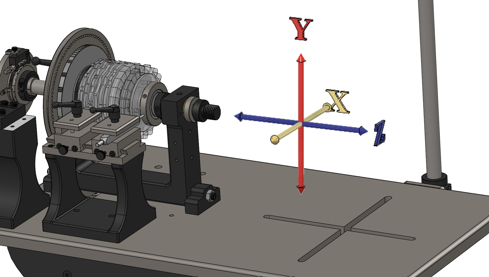
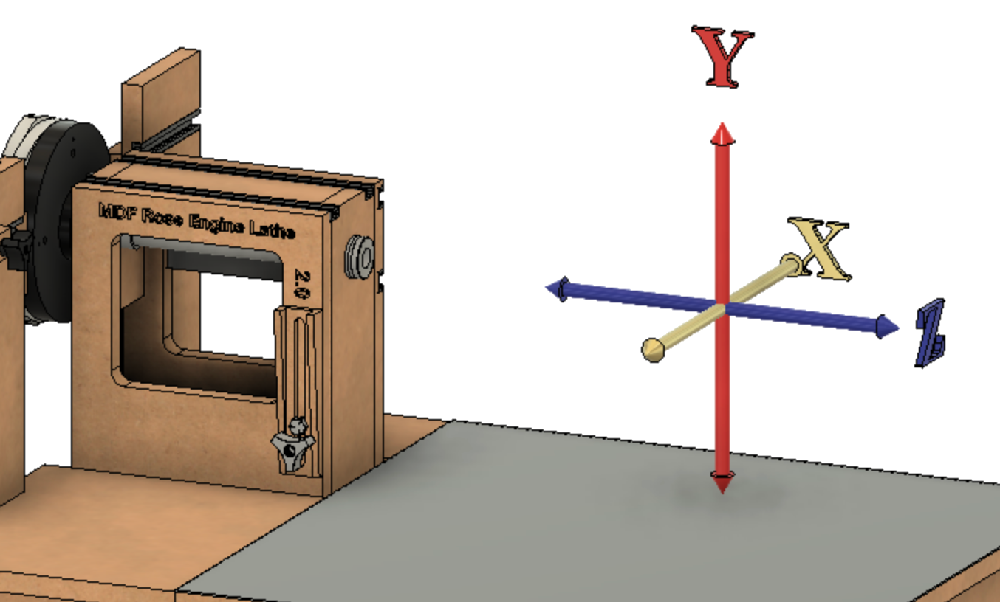
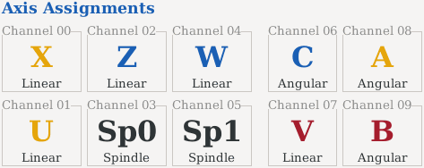

|
 Lathe Axes, shown on a Lindow Rose Engine |
|
 Lathe Axes, shown on an MDF Rose Engine 2.0 |
The Rosetta system can support up to 10 axes (6 on the Base Box and 4 more on the optional Expansion Box). The stepper motor plugs on the system are known as channels.
Each channel can be set to one of the spindles or axes noted below.
These axes are also depicted in the pictures to the right to show how they orient for use on lathes.
| Lathe Axes | |||||
| Axis | Mvmt Type | Potential Use(s) | Comments
| ||
| Sp0 | Spindle |
|
| ||
| Sp1 | Spindle |
| |||
|
| |||||
| X | Linear |
| By convention, this is in and out
| ||
| Y | n/a |
n/a - axis is not configured
|
| ||
| Z | Linear |
| By convention, this is left and right
| ||
|
| |||||
| A | Rotary | By convention, A is rotation around X
| |||
| B | Rotary | By convention, B is rotation around Y
| |||
| C | Rotary |
| By convention, C is rotation around Z. C is also used when synchronized motion of another axis and the spindle is needed (the spindle’s motor is plugged into this axis jack).
| ||
|
| |||||
| U | Linear | U is parallel to X
| |||
| V | Linear | V is parallel to Y By convention, this is up and down. | |||
| W | Linear |
| W is parallel to Z | ||
 Axis Assignments on Base Box |
|  Axis Assignments with Expansion Box |
Base Box
On the Base Box, up to 6 of these spindles and axes can be selected for use at any time - one per channel (plug).
- Sp1 can only be used when Sp0 is also selected for use.
The axes selected for use are shown at the bottom of the LinuxCNC screen on the right. As depicted here, the selected axes are: U, V, W, C, X, & Z.
Expansion Box
With the addition of the Expansion Box, all 10 of these spindles and axes can be selected for use at any time - one per channel (plug).
The Rosetta user can move the axes around to be assigned to whichever channel they wish.
Setting the axis assignments

To update the assignment of axes to channels (= plugs on the front of the box), you need to use the Rosetta Settings program (the one with a gear as the icon).
Rosetta Settings allows you to select
- Which axes you wish to use, and
- Which channel each axis is assigned to use.
The process to do this is
- Exit Rosetta
- Start Rosetta Settings
- Make whatever changes you wish,
- Save the settings, then
- Exit Rosetta Settings
- Restart Rosetta.
Device-specific axis assignments
Device-specific settings are a very useful feature. You may find that your curvilinear slide's stepper motor needs different settings than your cross slide. And as they both will probably be setup using the Z axis, you don't have figure it out each time.
For example, on my machine:
| Cross Slide | Curvilinear Slide |
|
(thusly it moves 8 mm per revolution)
|
|
For my cross slide, the calculated value was different than the actual value. Additionally, the two axes were not the same. The values were calibrated using a dial indicator to be:
|
|
Device-specific axis scenario - Cross slide
Using the Rosetta Settings program, enter the values you want for the Cross Slide. For this scenario that includes
- X axis
- Z axis

Once everything is good, use the button, Save Subset of Settings As... to save the settings for only these axes to its own file. I named mine, "CrossSlide.RosettaSet_v1.ini".
You can name it anything, but it cannot be named RosettaSet_v1.ini. And it should have an extension of .ini.
|
|
Then, whenever you want to use your cross slide, you can load the settings for it. The re-loaded file will only change the values for those axes (in this case, X & Z) and all the others will stay the same.
Device-specific axis scenario - Curvilinear slide
Using the Rosetta Settings program, you can enter the values you want for the Curvilinear Slide. For this scenario that includes
- Z axis
Once everything is good, use the button, Save Subset of Settings As... to save the settings for only the Z axis to its own file. I named mine, "CurvilinearSlide.RosettaSet_v1.ini".
As noted above, you can name it anything, but it cannot be named RosettaSet_v1.ini. And it should have an extension of .ini.
|
|
Then, whenever you want to use your curvilinear slide, you can re-load those settings for it. The re-loaded file will only change the values for that axis (in this case, Z) and all the others will stay the same.
Why use device-specific files?
There are a number of reasons for doing this:
- It makes it easy to switch devices and easily load the settings needed for that device
- It allows you to save the values for your devices in case you accidentally over-write them
- It allows a device maker to supply the data with the device